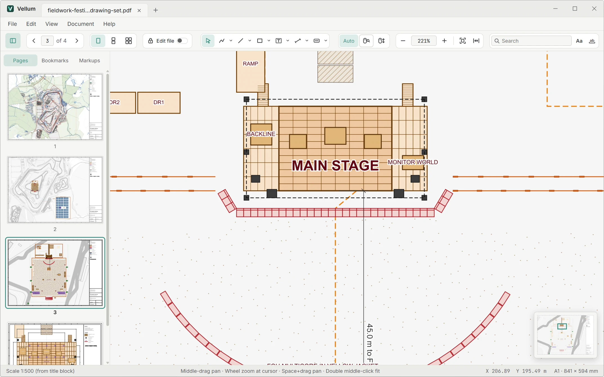
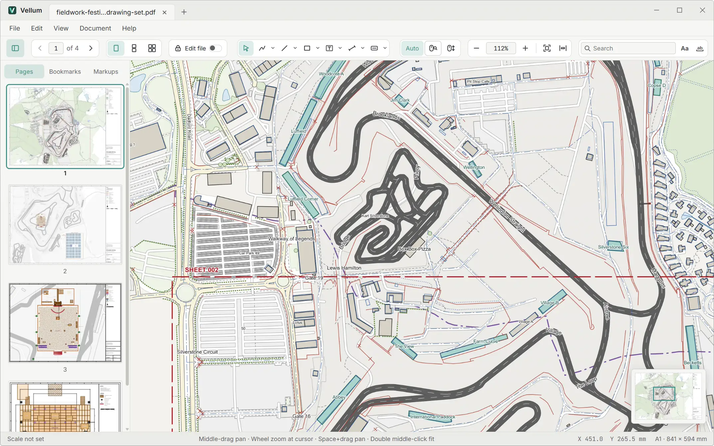
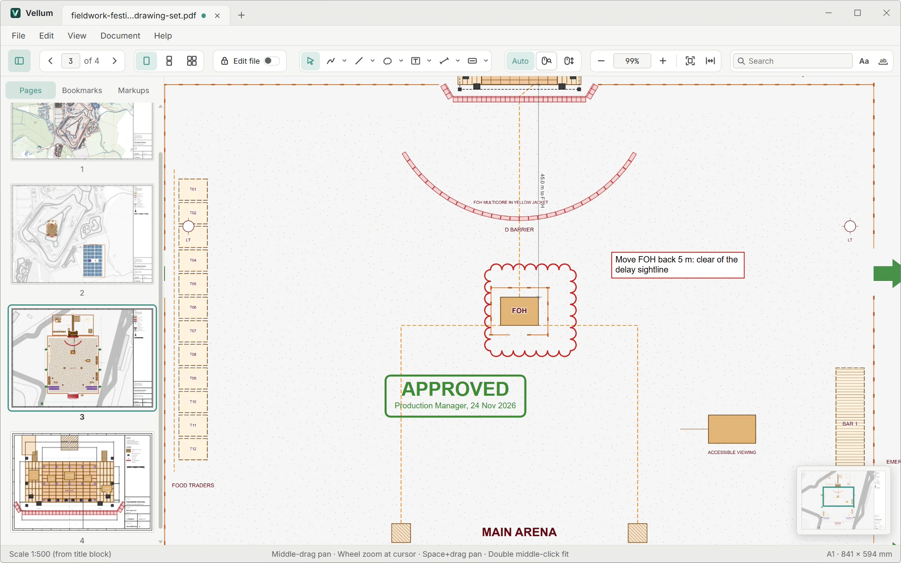
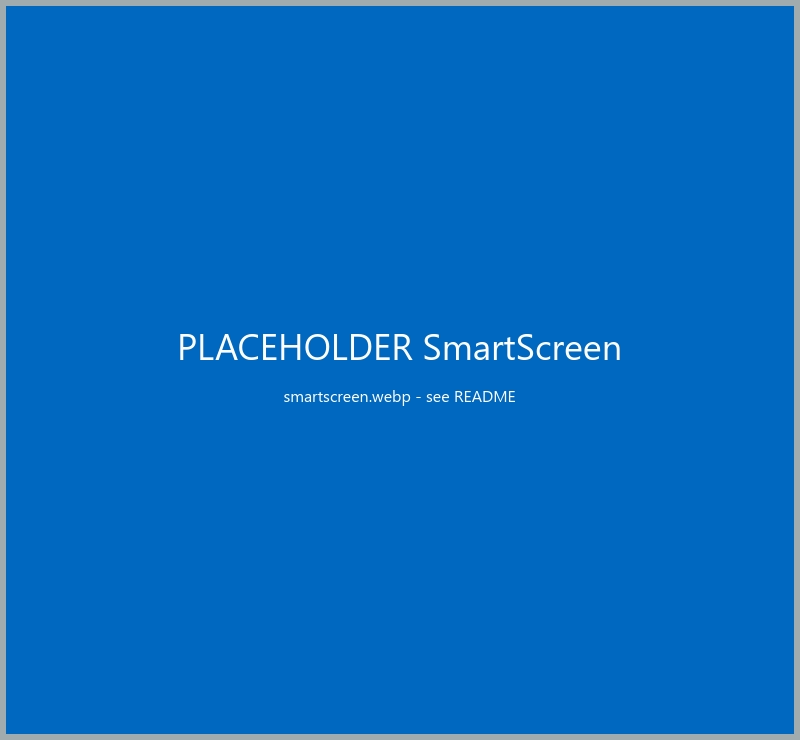

Built for drawings, not documents.
A fast PDF and image viewer for stage plans, site layouts and scanned blueprints.
Vellum is for Windows PCs. Send yourself this link and download it there.

-
97ms
from letting go of the mouse to a sharp image at 1600%, on the heaviest real drawing tested
-
1:200
prints to a real scale, read straight from the title block
-
0
accounts, cookies or analytics. Your files stay yours.
What it does
Everything you do with a drawing, without the wait.
Stage plans, site layouts, rigging plots, sixty-year-old scanned blueprints: the files that make general-purpose PDF readers sit and think. Vellum draws only what's on screen, at the detail you're looking at, so zooming in costs less, not more.
-
Quick on big drawings
Pages render in tiles, previews fill the gaps while you move, and they're cached, so a drawing you opened yesterday is there before you've let go of the mouse.

-
Moves like CAD
The wheel zooms at the cursor, middle-drag pans, double middle-click fits the page. A mini map for big drawings; office documents scroll like documents.

-
Real-world scale
Reads the scale off the title block, so the cursor is in metres on site. Lengths, areas, perimeters, angles and dimensions.

-
Markup, stamps and signatures
Clouds, arrows, text, shapes, pen and highlighter, saved as ordinary PDF markup that Acrobat and everyone else can see. Stamps, and your signature, drawn once and placed anywhere.

-
Prints to scale
Fit, actual size, a real ratio like 1:200, or tiled with cut marks. Lay crops out by hand across several sheets. Black lines turns grubby scans into clean, solid linework.


Images too: JPEG, PNG, WebP, TIFF, BMP and GIF open the same way, colour profiles and all, however big. The screenshots show the Fieldwork Festival, an event made up for them, with no connection to the venue or its owners. Map data © OpenStreetMap contributors (ODbL). Contains OS data © Crown copyright and database right 2026 (Open Government Licence).
Compared
How it compares.
The PDF readers you probably have already, in their free editions on Windows, against the things you do with a drawing.
| Feature | Vellum | Acrobat Reader | Foxit Reader | PDF-XChange | SumatraPDF | Edge | Chrome |
|---|---|---|---|---|---|---|---|
| Wheel zooms at the cursorNo Ctrl, no tool to switch to | Yes | Partly1 | Partly1 | No | Partly2 | No | No |
| Middle-drag pansLike CAD, not autoscroll | Yes | No | No | No | No | No | No |
| Reads the scale off the drawingFrom the title block, nothing to calibrate | Yes | Partly3 | Partly3 | Not checked yet | No | No | No |
| Measures in real units | Yes | Yes | Yes | Yes | No | No | No |
| Prints at a true scale1:200, not a percentage | Yes | Partly4 | Partly4 | Partly4 | No | Partly4 | Partly4 |
| Tiled printing with cut marks | Yes | Yes | Yes | Yes | No | No | No |
| Writes markups into the PDFClouds, arrows, text and stamps, as standard annotations anyone can see | Yes | Yes | Yes | Yes | Partly5 | Partly6 | Partly7 |
| Opens TIFF, PNG and JPEGAs a drawing, however big | Yes | No | No | Partly8 | Yes | Partly9 | Partly9 |
- Only with the Hand tool selected.
- Hold the right button and turn the wheel.
- Only when the PDF itself carries scale data, and only if turned on.
- A percentage only, worked out by hand.
- No clouds, and no drawn signature.
- Pen, highlighter and text only.
- Pen and text only, and they may be flattened into the page.
- Converts the image to a PDF first.
- PNG and JPEG only, as a browser image.
Free editions on Windows, checked November 2026. Every reader here can open a file without an account and place a stamp or signature, so those rows are left out.
Installing
Windows will warn you the first time.
The installer isn't code signed, so Windows may say
Windows protected your PC
. To carry on:
- 1Choose More info
- 2Choose Run anyway
The source is public, and every release is built from it by GitHub Actions. It installs for you alone, so it needs no admin rights. If your browser questions the download first, choose Keep.


Open your next drawing in Vellum.
Made by Matt James, who opens site and venue drawings for a living and wanted a viewer that kept up with them. Free and open source.